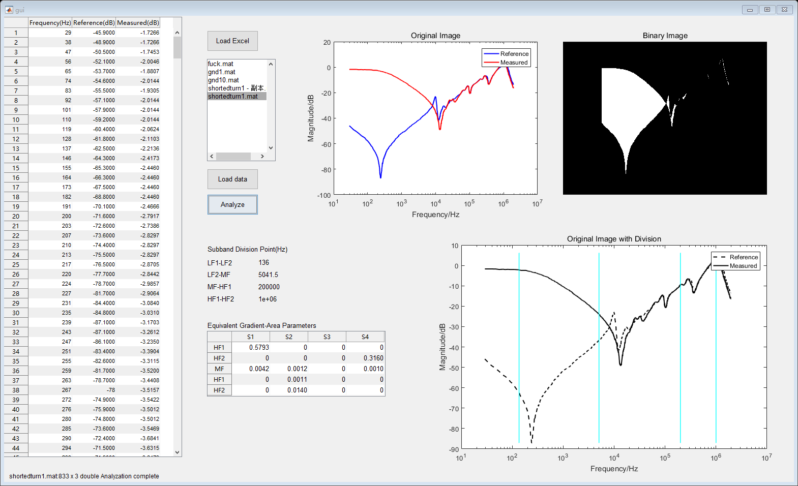

Contents
function varargout = gui(varargin) % GUI MATLAB code for gui.fig % GUI, by itself, creates a new GUI or raises the existing % singleton*. % % H = GUI returns the handle to a new GUI or the handle to % the existing singleton*. % % GUI('CALLBACK',hObject,eventData,handles,...) calls the local % function named CALLBACK in GUI.M with the given input arguments. % % GUI('Property','Value',...) creates a new GUI or raises the % existing singleton*. Starting from the left, property value pairs are % applied to the GUI before gui_OpeningFcn gets called. An % unrecognized property name or invalid value makes property application % stop. All inputs are passed to gui_OpeningFcn via varargin. % % *See GUI Options on GUIDE's Tools menu. Choose "GUI allows only one % instance to run (singleton)". % % See also: GUIDE, GUIDATA, GUIHANDLES % Edit the above text to modify the response to help gui % Last Modified by GUIDE v2.5 21-Aug-2020 17:27:05 % Begin initialization code - DO NOT EDIT gui_Singleton = 1; gui_State = struct('gui_Name', mfilename, ... 'gui_Singleton', gui_Singleton, ... 'gui_OpeningFcn', @gui_OpeningFcn, ... 'gui_OutputFcn', @gui_OutputFcn, ... 'gui_LayoutFcn', [] , ... 'gui_Callback', []); if nargin && ischar(varargin{1}) gui_State.gui_Callback = str2func(varargin{1}); end if nargout [varargout{1:nargout}] = gui_mainfcn(gui_State, varargin{:}); else gui_mainfcn(gui_State, varargin{:}); end % End initialization code - DO NOT EDIT % --- Executes just before gui is made visible. function gui_OpeningFcn(hObject, eventdata, handles, varargin) % This function has no output args, see OutputFcn. % hObject handle to figure % eventdata reserved - to be defined in a future version of MATLAB % handles structure with handles and user data (see GUIDATA) % varargin command line arguments to gui (see VARARGIN) % Choose default command line output for gui handles.output = hObject; % Update handles structure guidata(hObject, handles); % UIWAIT makes gui wait for user response (see UIRESUME) % uiwait(handles.figure1); % --- Outputs from this function are returned to the command line. function varargout = gui_OutputFcn(hObject, eventdata, handles) % varargout cell array for returning output args (see VARARGOUT); % hObject handle to figure % eventdata reserved - to be defined in a future version of MATLAB % handles structure with handles and user data (see GUIDATA) % Get default command line output from handles structure varargout{1} = handles.output; function edit1_Callback(hObject, eventdata, handles) % hObject handle to edit1 (see GCBO) % eventdata reserved - to be defined in a future version of MATLAB % handles structure with handles and user data (see GUIDATA) % Hints: get(hObject,'String') returns contents of edit1 as text % str2double(get(hObject,'String')) returns contents of edit1 as a double % --- Executes during object creation, after setting all properties. function edit1_CreateFcn(hObject, eventdata, handles) % hObject handle to edit1 (see GCBO) % eventdata reserved - to be defined in a future version of MATLAB % handles empty - handles not created until after all CreateFcns called % Hint: edit controls usually have a white background on Windows. % See ISPC and COMPUTER. if ispc && isequal(get(hObject,'BackgroundColor'), get(0,'defaultUicontrolBackgroundColor')) set(hObject,'BackgroundColor','white'); end % --- Executes on button press in pushbutton1. function pushbutton1_Callback(hObject, eventdata, handles) % hObject handle to pushbutton1 (see GCBO) % eventdata reserved - to be defined in a future version of MATLAB % handles structure with handles and user data (see GUIDATA) str1=get(handles.edit1,'String'); filepath=strcat('./data/',str1,'.mat'); load(filepath); set(handles.uitable1,'data',gnd1); set(handles.edit2,'string',strcat(filepath,' successfully loaded.')); function edit2_Callback(hObject, eventdata, handles) % hObject handle to edit2 (see GCBO) % eventdata reserved - to be defined in a future version of MATLAB % handles structure with handles and user data (see GUIDATA) % Hints: get(hObject,'String') returns contents of edit2 as text % str2double(get(hObject,'String')) returns contents of edit2 as a double % --- Executes during object creation, after setting all properties. function edit2_CreateFcn(hObject, eventdata, handles) % hObject handle to edit2 (see GCBO) % eventdata reserved - to be defined in a future version of MATLAB % handles empty - handles not created until after all CreateFcns called % Hint: edit controls usually have a white background on Windows. % See ISPC and COMPUTER. if ispc && isequal(get(hObject,'BackgroundColor'), get(0,'defaultUicontrolBackgroundColor')) set(hObject,'BackgroundColor','white'); end % --- Executes on selection change in listbox2. function listbox2_Callback(hObject, eventdata, handles) % hObject handle to listbox2 (see GCBO) % eventdata reserved - to be defined in a future version of MATLAB % handles structure with handles and user data (see GUIDATA) % Hints: contents = cellstr(get(hObject,'String')) returns listbox2 contents as cell array % contents{get(hObject,'Value')} returns selected item from listbox2 % --- Executes during object creation, after setting all properties. function listbox2_CreateFcn(hObject, eventdata, handles) % hObject handle to listbox2 (see GCBO) % eventdata reserved - to be defined in a future version of MATLAB % handles empty - handles not created until after all CreateFcns called % Hint: listbox controls usually have a white background on Windows. % See ISPC and COMPUTER. if ispc && isequal(get(hObject,'BackgroundColor'), get(0,'defaultUicontrolBackgroundColor')) set(hObject,'BackgroundColor','white'); end % --- Executes on button press in pushbutton2. function pushbutton2_Callback(hObject, eventdata, handles) % hObject handle to pushbutton2 (see GCBO) % eventdata reserved - to be defined in a future version of MATLAB % handles structure with handles and user data (see GUIDATA) files = dir('./data/*.mat'); len = length(files); fileName={}; for i = 1:len % files(i).name%得到文件路径 fileName{i}=files(i).name; %文件处理部分 end set(handles.listbox2,'string',fileName); set(handles.text3,'string','Data successfully loaded.'); % --- Executes on button press in pushbutton3. function pushbutton3_Callback(hObject, eventdata, handles)
% hObject handle to pushbutton3 (see GCBO) % eventdata reserved - to be defined in a future version of MATLAB % handles structure with handles and user data (see GUIDATA) a=get(handles.listbox2,'Value'); b=get(handles.listbox2,'String'); c=b{a}; data=load(strcat('./data/',c)); casenames=fieldnames(data) casedata=getfield(data,char(casenames)); set(handles.uitable1,'data',casedata); set(handles.text3,'string',strcat(c,': ',num2str(size(casedata,1)),' x 3 double Analyzing')); [hauspara,asp]=main(data,casenames); set(handles.text3,'string',strcat(c,': ',num2str(size(casedata,1)),' x 3 double Analyzation complete'));
pic1
axes(handles.pic1); [f,Ref,Measured,~,~,~,~,min_global,max_global,~,~,~,~]=getinformation(casedata); semilogx(f,Ref,'b','LineWidth',1.5); hold on; semilogx(f,Measured,'-r','LineWidth',1.5); legend('Reference','Measured'); xlabel('Frequency/Hz'); ylabel('Magnitude/dB'); title('Original Image'); hold off;
pic2
data=load(strcat('./mm_results/',c)); casenames='erodeImage'; casedata=getfield(data,char(casenames)); axes(handles.pic2); imshow(strcat('./mm_results/',strrep(c,'.mat','.tif'))); title('Binary Image');
pic3
data=load(strcat('./originalwithdivision/',c)); casenames='divisionpnt'; casedata=getfield(data,char(casenames)); LF1rightpnt=casedata(1); LF2rightpnt=casedata(2); HF1leftpnt=casedata(3); HF2leftpnt=casedata(4); axes(handles.pic3); semilogx(f,Ref,'--k','LineWidth',1.5); hold on; semilogx(f,Measured,'-k','LineWidth',1.5); hold on; plot([LF1rightpnt,LF1rightpnt],[min_global,max_global],'c','LineWidth',1); hold on; plot([LF2rightpnt,LF2rightpnt],[min_global,max_global],'c','LineWidth',1); hold on; plot([HF1leftpnt,HF1leftpnt],[min_global,max_global],'c','LineWidth',1); hold on; plot([HF2leftpnt,HF2leftpnt],[min_global,max_global],'c','LineWidth',1); legend('Reference','Measured'); xlabel('Frequency/Hz'); ylabel('Magnitude/dB'); title('Original Image with Division'); hold off;
band
set(handles.uitable4,'data',casedata);
set(handles.band1,'string',casedata(1)); set(handles.band2,'string',casedata(2)); set(handles.band3,'string',casedata(3)); set(handles.band4,'string',casedata(4));
uitable3
data=load(strcat('./aspresult/',c)); casenames='ASPDist'; casedata=getfield(data,char(casenames)); set(handles.uitable3,'data',casedata); % --- Executes during object creation, after setting all properties.
function uitable3_CreateFcn(hObject, eventdata, handles) % hObject handle to uitable3 (see GCBO) % eventdata reserved - to be defined in a future version of MATLAB % handles empty - handles not created until after all CreateFcns called % --- Executes on button press in pushbutton4. function pushbutton4_Callback(hObject, eventdata, handles) % hObject handle to pushbutton4 (see GCBO) % eventdata reserved - to be defined in a future version of MATLAB % handles structure with handles and user data (see GUIDATA) [filename filepath]=uigetfile({'*.csv'},'打开图片','MultiSelect','on'); if ~isa(filename,'char') for i=1:size(filename,2) casename=strrep(char(filename(i)),'.csv','') path=strcat(char(filepath),char(filename(i))); eval([casename,'=importfile(path)']); % importfile(path); name=strcat('data\',strrep(char(filename(i)),'csv','mat')); eval(['save(''',name,''',''',casename,''')']); % save(strcat('data\',name),'ans'); end else casename=strrep(char(filename),'.csv','') path=strcat(char(filepath),char(filename)); eval([casename,'=importfile(path);']); % importfile(strcat(char(filepath),char(filename))); name=strcat('data\',strrep(char(filename),'csv','mat')); eval(['save(''',name,''',''',casename,''')']); % save(strcat('data\',name),'ans'); end set(handles.text3,'string','All selected csv files loaded.');